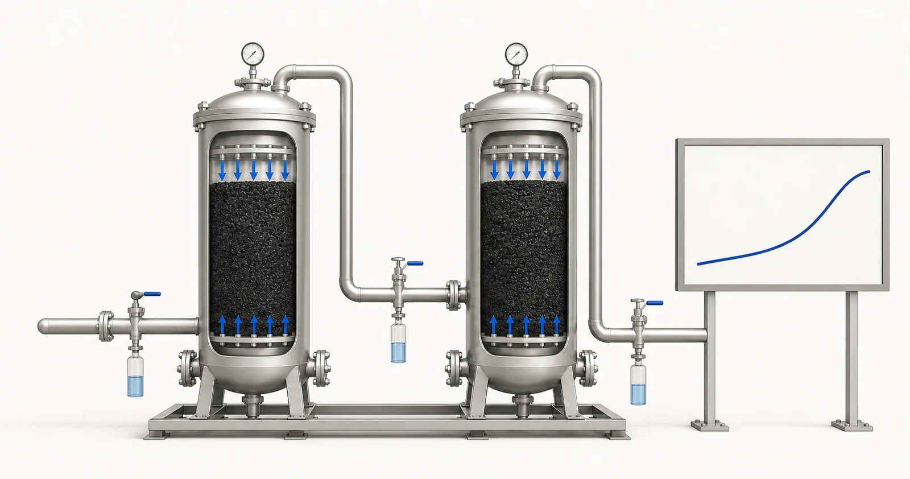

Câu trả lời trực tiếp
Hệ thống GAC công nghiệp được thiết kế dựa trên mục tiêu xử lý và chiến lược kiểm soát hiện tượng chất mục tiêu lọt qua lớp hấp phụ, không chỉ dựa trên khối lượng vật liệu. Thời gian tiếp xúc quy ước theo thể tích toàn bộ lớp vật liệu, hay EBCT, thể hiện mối quan hệ giữa thể tích danh định của vùng chứa lớp vật liệu khi coi vùng này là rỗng và lưu lượng, nhưng chỉ là một thông số đầu vào của thiết kế. Chiều sâu lớp vật liệu, tải trọng thủy lực, thành phần hóa học của nước, chất hữu cơ cạnh tranh, nhiệt độ, kiểm soát hạt, phân phối dòng chảy và loại than được chọn đều ảnh hưởng đến vận hành. Thiết kế cũng cần giới hạn áp suất, điểm lấy mẫu, ngưỡng cần hành động tại đầu ra được xác định rõ, các biện pháp rửa ngược hoặc quản lý hạt mịn và kế hoạch thay thế hoặc tái sinh. Yuchen Water có thể cung cấp vật liệu than hoạt tính và hỗ trợ kỹ thuật thiết bị sau khi xem xét báo cáo, yêu cầu vận hành thủy lực và yêu cầu giám sát.
Bắt đầu từ vấn đề của người mua
Bên mua có thể biết lưu lượng yêu cầu nhưng chưa biết tải lượng chất ô nhiễm hoặc tiêu chí đánh giá cuối cùng đối với chất mục tiêu. Trong trường hợp đó, việc xác định kích thước bình không thể xác lập tuổi thọ vật liệu. Một dự án khác có thể có dữ liệu thành phần hóa học chi tiết nhưng không có thông tin về lưu lượng cực đại, chu kỳ vận hành hoặc áp suất sẵn có. Cả hai khoảng trống đều quan trọng. Bản yêu cầu kỹ thuật phải kết hợp chất lượng nước, thủy lực và vận hành để hệ thống không được định cỡ theo một điều kiện trung bình không còn tồn tại khi nhu cầu đạt cực đại hoặc có thay đổi theo mùa.
Hiện tượng chất mục tiêu lọt qua lớp hấp phụ không đồng nghĩa với việc khả năng hấp phụ đã cạn hoàn toàn. Đây là thời điểm một hợp chất được giám sát hoặc chất chỉ thị thay thế đạt ngưỡng cần hành động do dự án xác định. Ngưỡng đó có thể được đặt ở mức thấp hơn giới hạn tuân thủ hoặc giới hạn quy trình để tạo khoảng dự phòng vận hành. Các hợp chất khác nhau có thể lọt qua lớp hấp phụ vào những thời điểm khác nhau, và chất hữu cơ tự nhiên có thể chiếm dung lượng hấp phụ. Dự án cần nêu rõ sẽ đo gì, lấy mẫu ở đâu, phân tích với tần suất nào và hành động nào được thực hiện theo kết quả.
Cần cung cấp báo cáo và dữ liệu vận hành nào
Đánh giá cho ứng dụng công nghiệp cần hồ sơ thành phần hóa học có tính đại diện và phạm vi vận hành thủy lực. Một kết quả TDS đơn lẻ không thể xác định yêu cầu hấp phụ hoặc đặc tính vận hành của bình.
- các hợp chất mục tiêu, khoảng nồng độ đầu vào, mục tiêu đầu ra và phương pháp phân tích
- TOC hoặc COD, các chỉ số về chất hữu cơ tự nhiên và các hợp chất cạnh tranh
- pH, nhiệt độ, độ đục, chất rắn lơ lửng và các điều kiện sinh học liên quan
- lưu lượng trung bình, tối thiểu và cực đại cùng thời gian vận hành hằng ngày và biến động lưu lượng
- áp suất sẵn có, tổn thất áp suất cho phép và yêu cầu của các công đoạn phía sau
- đường kính bình, chiều sâu lớp vật liệu, thể tích lớp vật liệu và phương án bộ phân phối dự kiến nếu biết
- vị trí lấy mẫu, tần suất, ngưỡng cần hành động khi chất mục tiêu lọt qua lớp hấp phụ và thời gian đáp ứng
- kế hoạch thay vật liệu, tái sinh, rửa ngược, thoát nước và xử lý vật liệu đã qua sử dụng
Báo cáo cần đủ mới để đại diện cho nguồn nước dự kiến và nên nêu ngày cùng vị trí lấy mẫu. Nếu nước thay đổi theo mùa, lô sản xuất hoặc trạng thái vận hành, hãy cung cấp khoảng biến động thay vì một kết quả được chọn cho thuận tiện. Nêu riêng mục tiêu nước sau xử lý cần đạt và kết quả phân tích hiện tại. Khi chưa biết một giá trị, hãy ghi rõ là chưa biết; một khoảng trống được thể hiện rõ an toàn hơn một con số phỏng đoán.
Thông tin thủy lực cần được xem xét cùng thông tin hóa học. Chỉ dùng lưu lượng trung bình có thể che khuất các đợt lưu lượng cực đại ngắn, chế độ vận hành gián đoạn và thời gian nước lưu đọng kéo dài. Cần xác nhận thời gian vận hành hằng ngày, nhu cầu cực đại, áp suất sẵn có, tổn thất áp suất cho phép, kích thước thiết bị và người chịu trách nhiệm giám sát, thay than. Những chi tiết này quyết định liệu một vật liệu vốn có vẻ phù hợp có thể được sử dụng trong hệ thống có thể vận hành và bảo trì hay không.
Cơ sở lựa chọn
Tính EBCT danh định từ thể tích toàn bộ vùng chứa lớp vật liệu được đề xuất, coi vùng này là rỗng, và lưu lượng vận hành, sau đó kiểm tra xem toàn bộ phạm vi thủy lực có duy trì cơ sở thiết kế dự kiến hay không. Không công bố một giá trị EBCT như yêu cầu chung cho mọi chất ô nhiễm. Giá trị này phải có căn cứ từ bằng chứng liên quan, thử nghiệm thí điểm, hướng dẫn của nhà cung cấp hoặc thiết kế quy trình do người có chuyên môn thực hiện. Lưu lượng cực đại, vận hành song song và các bình ngừng hoạt động có thể làm thay đổi đáng kể thời gian tiếp xúc có được.
Tiếp theo, hãy đánh giá phân phối dòng chảy. Bộ phân phối hoạt động kém, tải không đồng đều, khí bị giữ lại hoặc lớp vật liệu bị xáo trộn có thể tạo ra các đường dòng ưu tiên làm giảm thời gian tiếp xúc hiệu dụng. Chiều sâu lớp vật liệu và hình học bình phải phù hợp với kích thước hạt được chọn, lưới giữ vật liệu và chiến lược rửa ngược. Đồng hồ hoặc bộ truyền tín hiệu áp suất đo ở hai phía của bình cung cấp tín hiệu vận hành, nhưng chỉ riêng tổn thất áp suất không cho biết chất mục tiêu đã lọt qua lớp hấp phụ hay chưa.
Hãy lựa chọn đồng thời phương án giám sát và thứ tự bố trí bình. Các bình bố trí nối tiếp trước–sau có thể tạo một công đoạn xử lý tinh bảo vệ đầu ra và cho phép luân chuyển vị trí vận hành sau khi lớp vật liệu trước đạt ngưỡng cần hành động. Các bình song song có thể đáp ứng năng lực xử lý lưu lượng nhưng cần phân phối cân bằng và chiến lược lấy mẫu cho từng tuyến. Cách bố trí cần phản ánh yêu cầu duy trì vận hành liên tục, thời gian trả kết quả phân tích, khả năng tiếp cận để bảo trì hoặc thay vật liệu và hậu quả của việc vượt mục tiêu đầu ra.

- Thiết bị tiếp xúc phía trước
- Điểm lấy mẫu giữa các công đoạn
- Thiết bị tiếp xúc phía sau
- Điểm lấy mẫu đầu ra
- Xu hướng minh họa hiện tượng chất mục tiêu lọt qua lớp hấp phụ
Hình minh họa khái niệm. Không phải kết quả thử nghiệm, chứng nhận sản phẩm hoặc bản vẽ kỹ thuật.
Bối cảnh tiền xử lý, thiết bị và vận hành
Tiền xử lý bảo vệ hiệu quả thủy lực và hấp phụ. Kiểm soát chất rắn có thể giảm bám bẩn và hình thành kênh dòng, trong khi thành phần hóa học của nước ở phía trước có thể cần điều chỉnh cho quy trình mục tiêu. Nếu chất oxy hóa hoặc sự phát triển của sinh vật có liên quan, thiết kế phải xử lý rõ các yếu tố này. Chất lượng, lưu lượng và phương án thải bỏ nước rửa ngược cũng cần được xem xét; việc bố trí rửa ngược không có giá trị nếu địa điểm không thể đáp ứng điều kiện thủy lực yêu cầu.
Quá trình đưa vào vận hành cần ghi nhận thông tin nhận dạng vật liệu, lượng đã nạp, chiều sâu lớp vật liệu, việc xả rửa ban đầu, áp suất nền và kết quả phân tích ban đầu. Trong vận hành, cần theo dõi xu hướng lưu lượng, áp suất, kết quả lấy mẫu và các sự kiện vận hành, bảo trì hoặc thay vật liệu. Kế hoạch thay thế cần bao gồm khả năng cung ứng vật liệu, cô lập bình, thao tác xử lý an toàn và xác minh sau khi đưa trở lại vận hành. Yuchen Water có thể hỗ trợ tài liệu về vật liệu, cung ứng và giải đáp các câu hỏi về thiết bị trong phạm vi đã xác định này.
Những sai lầm thường gặp
- Coi EBCT là quy tắc duy nhất để xác định kích thước
- Dự đoán tuổi thọ vật liệu từ số kilôgam than mà không có dữ liệu về tải lượng chất ô nhiễm
- Dùng độ sụt áp thay cho thử nghiệm xác định sự xuyên qua của chất cần xử lý qua lớp than
- Không tính đến lưu lượng cực đại, thời gian bình xử lý ngừng hoạt động và thời gian trả kết quả phân tích trong thiết kế
- Không bố trí điểm lấy mẫu hoặc ngưỡng hành động trước khi đạt giới hạn ở đầu ra
Bằng chứng và phạm vi dịch vụ
Phương án sơ bộ về bình xử lý có thể xác định những thông tin còn thiếu và các cách bố trí có thể áp dụng, nhưng không phải là thiết kế bảo đảm hiệu quả xử lý. Dự báo về khả năng xử lý cần có bằng chứng phù hợp với ứng dụng và các giả định được trình bày rõ cho bên mua. Khi sự bất định có ảnh hưởng đáng kể, thử nghiệm quy mô phòng thí nghiệm hoặc thí điểm cùng một kế hoạch giám sát thận trọng có thể là lựa chọn phù hợp trước khi đưa ra cam kết thương mại cuối cùng.
Vai trò của Yuchen Water là cung cấp vật liệu than hoạt tính cùng hỗ trợ kỹ thuật liên quan đến bình xử lý, lọc và thiết bị. Công tác kỹ thuật tại hiện trường, việc tuân thủ quy định địa phương, an toàn quy trình và nghiệm thu vận hành cuối cùng vẫn phụ thuộc vào từng dự án. Không trang nào được công bố nên cam kết một giá trị EBCT, tuổi thọ lớp vật liệu, tỷ lệ loại bỏ hoặc chu kỳ thay thế áp dụng chung khi chưa có cơ sở được phê duyệt và lập thành tài liệu.
Yuchen Water xem xét mục tiêu và bằng chứng trước, sau đó xác định dạng than phù hợp và những vấn đề về vật liệu cần làm rõ, nhu cầu tiền xử lý và thiết bị hỗ trợ, cùng những tài liệu hoặc thử nghiệm vẫn còn cần thiết. Kết quả có thể là định hướng sơ bộ, yêu cầu bổ sung thông tin hoặc khuyến nghị về vật liệu và thiết bị có cơ sở. Khuyến nghị không được đưa ra chỉ vì người mua đã cung cấp tên sản phẩm.
Sau khi cung cấp sản phẩm, hỗ trợ kỹ thuật có thể bao gồm xác nhận tài liệu, giải đáp về lắp đặt và súc rửa, hướng dẫn chạy thử đưa vào vận hành từ xa, các điểm giám sát và lập kế hoạch thay thế trong phạm vi đã thỏa thuận. Hiệu quả thực tế vẫn phụ thuộc vào vật liệu được phê duyệt, hệ thống thiết bị đầy đủ, nước nguồn, việc lắp đặt, vận hành và bảo trì. Hướng dẫn đã công bố không thể thay thế việc đánh giá dự án.
Không cam kết về vật liệu cuối cùng, dung lượng xử lý, tuổi thọ sử dụng, tỷ lệ loại bỏ hoặc kết quả dự án trước khi xem xét báo cáo, cấu tạo, bằng chứng và điều kiện vận hành.
Nguồn kỹ thuật chính thức
Các nguồn này giải thích nguyên lý xử lý hoặc giới hạn phạm vi chứng nhận. Các nguồn này không chứng nhận sản phẩm của Yuchen Water và không thay thế bằng chứng riêng cho từng dự án.
Hướng dẫn liên quan về than hoạt tính
Tiếp tục tìm hiểu nhóm tài liệu kiến thức, rà soát bằng chứng của các mẫu được chọn chỉ trong phạm vi giới hạn đã nêu, so sánh các dạng sản phẩm hoặc gửi báo cáo để đánh giá kỹ thuật.